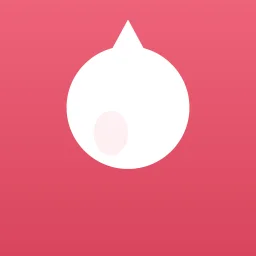
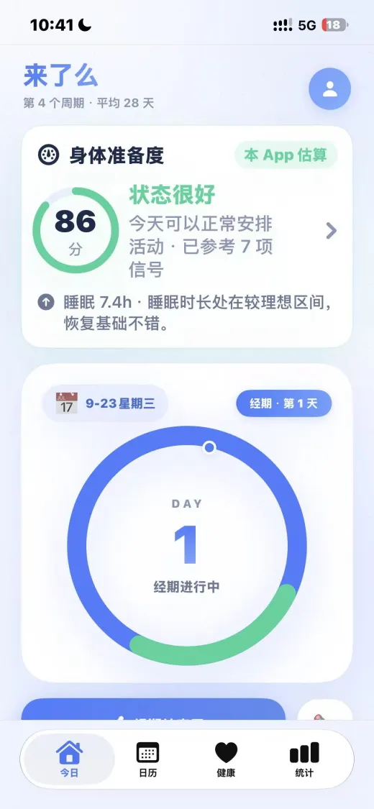
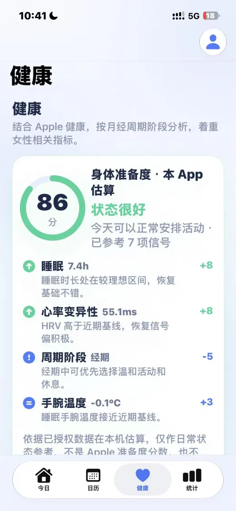
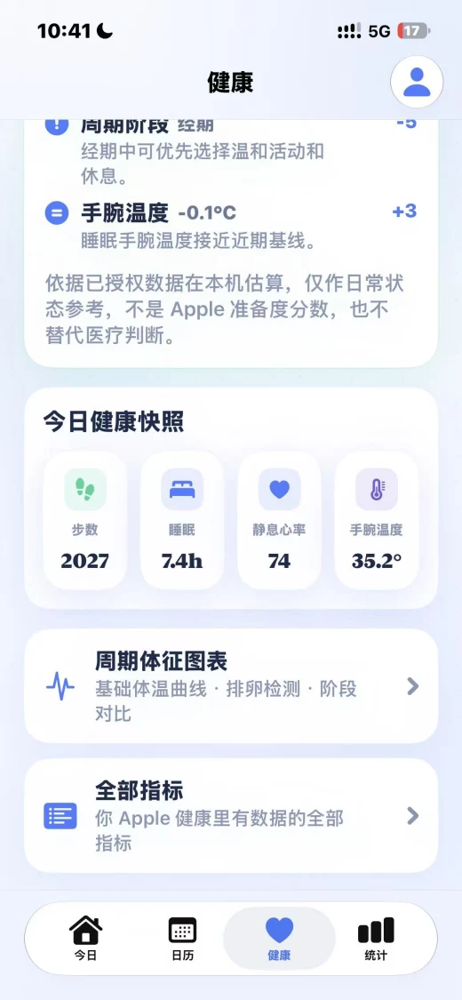
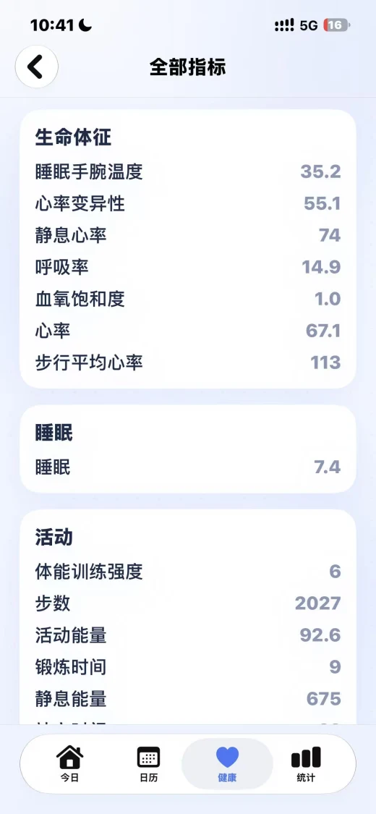

Daily health · iPhone and iPad
Lele Health: daily health, with optional Cycle Care
Lele Health, previously listed as Laleme and Lailemma, brings the health data you authorize into one place. Review sleep, activity, heart rate and body measurements, follow trends, and keep a daily journal. Cycle Care is an optional section.
App Store release 2.1.0 The US, Egypt, Malaysia and Poland App Store records checked on October 23, 2026 list Lele Health 2.1.0. The screenshots below come from the earlier Chinese-language product presentation; they are not a new 2.1.0 interface preview. Listed interface languages are English, German, Japanese, Korean and Simplified Chinese.
Real product screen
Body Readiness screens




Your daily overview
Review the health data you allow
Connect Apple Health to review available sleep, activity, heart-rate and body-measurement records on your device. What appears depends on the records available and the categories you authorize.
Bring readiness, steps, sleep, resting heart rate, HRV, active energy and exercise time into a daily view, using the data available to the app.
Browse health metrics by category and open individual records to see the information behind an overview.
Review changes across 7, 30 or 90 days. Add your mood, symptoms and notes to a daily journal for personal context.
Optional Cycle Care
Open cycle tools when you want them
Cycle Care is an optional area reached from the bottom of Home. The everyday health overview and journal are not limited to period tracking.
Use the optional section for period records, predicted dates and reminders.
Fertility tools and cycle analysis are available within Cycle Care. Their estimates are for personal reference and are not a medical diagnosis.
Start with the health categories and journal you need; enter Cycle Care separately when those records are relevant to you.
Permissions and estimates
Keep the data and its interpretation in context
The App Store description states that records stay local and health analysis runs on your device. Apple Health access is permission-based; review the categories you choose to share.
Readiness is Lele Health's daily wellness estimate. It is not an Apple readiness score and does not diagnose a condition.
The checked version requires iOS 17.0 or later. Apple lists English, German, Japanese, Korean and Simplified Chinese; an English product page does not add other interface languages.
Check your regional App Store for availability, compatibility and purchase conditions before installing. The October 23 check confirms public store records, not a device test of every screen.
Common questions
Before you download
Is Lele Health only a period tracker?
No. Version 2.1.0 is presented as an everyday health tracker with authorized Apple Health records, trends and a daily journal. Cycle Care is optional and opens separately from Home.
Which release was checked?
The public US, Egypt, Malaysia and Poland App Store records checked on October 23, 2026 list Lele Health 2.1.0. Check your local listing for newer updates and availability.
Does Lele Health calculate an Apple readiness score?
No. Readiness is the app's on-device daily wellness estimate, not an Apple score or a medical diagnosis.
Are the screenshots from version 2.1.0?
The images are developer-supplied Chinese-language screens from the earlier product presentation. They illustrate previous views and are not presented as a new 2.1.0 interface preview.
Which languages and permissions should I check?
Apple lists English, German, Japanese, Korean and Simplified Chinese. Choose the Apple Health categories you want to authorize, and review current requirements in your local App Store.
Regional App Store listings
Choose your local App Store listing.
Open a regional listing to check local prices, compatibility, supported app languages, and the features included in your store. This product page is in English; the app’s interface languages are listed separately in the App Store.